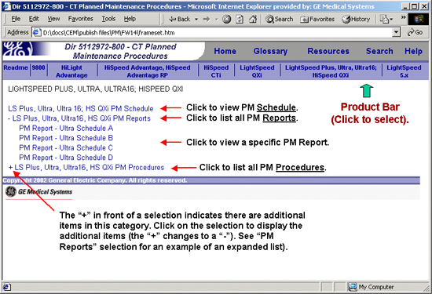

Operating Documentation
Direction 5112972-800, Rev# 2
CT Planned Maintenance Procedures
Operating Documentation |
| Last Revised on: | June 10, 2004 |
The objective of Planned Maintenance (PM) is to ensure correct production operation.
CT Service Engineering has updated Planned Maintenance for many CT scanner products from 250K gantry revolutions to 500K gantry revolutions.
PC40 frequency codes have been adjusted to provide PM events per the usage based recommended schedule.
Table 1: Old vs. New PM Schedules
| Market Name | Old Time Base Visit | 2001 Usage Based PM | 2003 Usage Based PM |
| 9800 | 12 | 4 or 12 | No Change |
| HLA | 12 | 4 or 12 | No Change |
| HSA, HSA-RP | 12 | (Every 250K rev) | No Change |
| CT/i | N/A | (Every 250K rev) | (Every 500K rev) |
| LightSpeed QX/i 1.X | N/A | (Every 250K rev) | (Every 500K rev) |
| LightSpeed QX/i 2.X | N/A | (Every 250K rev) | (Every 500K rev) |
| LightSpeed QX/i 3.X | N/A | (Every 250K rev) | (Every 500K rev) |
| LightSpeed Plus 2.X | N/A | (Every 250K rev) | (Every 500K rev) |
| LightSpeed Plus 3.X | N/A | (Every 250K rev) | (Every 500K rev) |
| LightSpeed Ultra 3.X | N/A | (Every 250K rev) | (Every 500K rev) |
| HiSpeed QX/i | N/A | (Every 250K rev) | (Every 500K rev) |
| LightSpeed 16 4x | N/A | (Every 250K rev) | (Every 500K rev) |
| LightSpeed 5x | N/A | N/A | (Every 2000K rev) |
Usage based Planned Maintenance is designed to deliver a higher level of benefit than time based PMs by focusing on system performance at the right time. Only activities performed per instruction in this CT PM publication are to be coded as PM activities. All other activities, including option environmental audit, Courtesy Calls, Administrative Time and remedial maintenance shall be coded properly.
Schedules now have a task to check on-site PM documentation revision.
Checklists, schedules, and hyperlinks now match.
Filter and fan checks have been added.
All Image Quality (IQ) checks have been removed. IQ checks have always been a daily requirement for the customer to perform. IQ problems shall be remedied with a service call. (Please reference operator's Technical Reference Manuals for daily IQ checks).
HSA and HSA-RP schedules have been combined.
HSA products now have a task for Collimator cleaning.
9800, and HLA schedules are now usage based as determined by annual slice rate. The average scanner will have 4/year unless it is defined as needing the HIGH USAGE schedule of 12 per year. Any 9800 or HLA system accumulating more than 100K gantry slices per year is considered HIGH USAGE.
The High Usage schedule can be applied to 9800 and HLA systems that exists in dusty, linty, or other hostile environments.
HSA, and HSA-RP systems have PMs every 250k gantry revolutions. Therefore, the average scanner will require 4 PM/year, unless the usage rate is higher than 1,000,000 gantry revolutions per year.
HSA, and HSA-RP Systems that require PMs more often than 250k gantry revs now have an “Optional Environmental Audit” available in the price pages. This “Optional Environmental Audit” consists mostly of filter and slip ring cleaning and fan checks, and is up to the customer and local field team for frequency of application. DO NOT code this Optional Environmental Audit as a PM activity.
Gantry revolutions per PM are now at 500K, up from 250K.
These products now have a task for Collimator cleaning.
Systems that require PMs more often than 500k gantry revs now have an “Optional Environmental Audit” available in the price pages. This “Optional Environmental Audit” consists mostly of filter and slip ring cleaning and fan checks, and is up to the customer and local field team to determine frequency of application. Do Not Code this Optional Environmental Audit as a PM activity, please use Service Class 001, 005 or 090.
More scheduling flexibility to match their needs
Less downtime for PM activity
More focused PM
Less un-scheduled maintenance
Improved resource allocation
More flexibility
Reduced PM cost charged to system warranty and service contracts
Consistent global PM schedules
This publication includes all the necessary PM procedures and annual schedules for the following CT Systems:
9800
HiLight Advantage (HLA)
HiSpeed Advantage (HSA) and HiSpeed Advantage RP (HSA-RP)
HiSpeed CT/i
LightSpeed QX/i
LightSpeed Plus, LightSpeed Ultra, LightSpeed 16, and HiSpeed QX/i.
LightSpeed 5.x
The PM information is structured in three parts:
Schedules
Checklists/Reports
Procedures
Schedules provide the recommended annual procedures and their frequency for each system. Each schedule identifies the subsystem and the list of procedures to perform for each PM period (e.g. columns A, B, C, etc.). Clicking on the procedure title hyper-link opens the respective procedure. The procedures are also accessed from the “Procedures” heading in the user interface. Estimated times are given for the completion of each schedule.
| NOTE: | The “Type” column field in the schedules is not used at present for CT. |
Most PMs are based on gantry revolutions and done every 500k gantry revolutions (except for LightSpeed 5.x, which is 2000k gantry revolutions). The average scanner does 2b,000,000 revolutions per year, therefore the average scanner has approximately four Planned Maintenance activities per year.
The session checklists, called PM Reports, are intended to be a record for the customer (see Illustration 1) . They can be accessed from the “Reports” label in the user interface and printed from the electronic form. The reports can also be used as a guide to perform the needed PM procedures during each PM visit. Each PM Report (e.g. Schedule A for the first PM, Schedule B for the second PM, and so on), shows the PM procedures sorted by subsystem and the actions taken (e.g. Inspect, Clean, Split Dispatch).
Illustration 1: Contents of a PM Report

The PM procedures contain all the information required to perform a specific task (special tools/supplies needed, prerequisites, and task description). They can be accessed either from the PM schedules, or directly from the user interface.
On the PM main publication screen, click the appropriate CT System scanner product. See Illustration 2. This displays the following selections: PM schedule(s), PM Reports, and PM Procedures. Select the corresponding PM report/checklist from under the Reports list for the current visit and print it. The PM procedures can be accessed from the Schedules via hyper-links or from the Procedures list in the user interface.
Illustration 2: PM Publication User Interface

Lint and other dirt affects the reliability of the system. The CT system has filters in critical locations to protect the components. We have developed planned maintenance schedules with the assumption that the hospitals maintain reasonable cleanliness in the scanner room. Sites with excessive lint and dirt in the scan room may require more frequent cleaning.
There is an on going effort by CT engineering to improve filters and other designs to make the system more immune to dirt. Following the suggestions listed below and strict adherence to the specified maintenance schedule will improve the product life and the system up time.
Clean up dirt on the floor, particularly around the table, console and gantry accessible to the customer.
Relocate linen/cloth stored near the table and gantry to reduce source for lint/dirt around the scanner.
Incorporation and regular changing of HEPA filter to the CT rooms will also improve the cleanliness of the room.
Careful planning of the air circulation in the CT Scanner room. Airflow in the CT room during and after site planning stages are important to system reliability and tube life.
Communicate site cleanliness with customer.
Show the customer the critical components (like the tube and the cooling system) and explain the airflow. Stress the importance of keeping the room clean between PM visits, provide suggestions for maintaining site cleanliness to improve System reliability and tube life.
Keeping the fans ‘ON’ continuously draws more dirt into the gantry and should be avoided.
Keeping fans on continuously is NON-COMPLIANT to approved CT Scanner Design.
Follow the PM schedule.
Reschedule as soon as possible if a PM is missed.
Use the Automated Support Center (ASC) to help monitor site.
The ASC will be sweeping the CT/i sites once a day as part of the proactive service feature. If it detects a tube pressure/temperature switch trip, an on line support center engineer will review and call the field engineer. It is important for the field engineer to visit the site to make sure that the filter is not clogged. Please remember, there are other conditions that can trip the switch.
Inspect the filters when servicing Gantry:
If Filter is used, the new Heat Exchange filter should take 5 minutes to clean (if needed).
If NO filter is in place, consider moving up PM schedule.